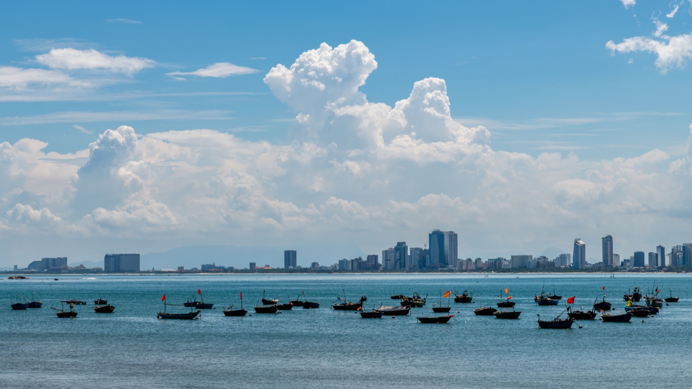

오토바이 장거리 주행 중 피로: 언제 쉬어야 할까
오토바이에서 피로는 모르는 사이 쌓입니다: 햇볕, 바람, 소음, 계속되는 흐름 관찰, 고정된 자세가 모두 주의력을 씁니다. 위험은 힘이 다 빠졌을 때가 아니라 그보다 먼저 — 판단이 느려지고 자신의 실수를 알아채지 못할 때 시작됩니다.
기록이 아니라 여유를 계획하라
내비게이션은 예상 주행 시간을 보여주지만 더위, 비, 주유, 길 찾기, 휴식은 계산하지 않습니다. 계획에 여유 시간을 더하고 안전한 휴식 장소를 미리 표시하세요. 낯선 경로에서는 지연을 속도로 만회하려 하기보다 어두워지기 전에 도착하는 게 낫습니다.
피로의 첫 신호
- 잦은 하품과 자세를 바꾸고 싶은 느낌;
- 뭉친 어깨, 손목, 뻣뻣한 허리;
- 놓친 회전이나 늦게 본 표지판;
- 이유 없이 너무 가까운 차간 거리;
- 다른 운전자의 평범한 행동에 짜증;
- 마지막 몇 킬로미터가 잘 기억나지 않음.
이런 신호 하나만으로도 차분히 멈출 이유가 됩니다. 커피와 큰 음악은 잠시 기분을 바꿀 수 있지만 휴식을 대신하지 못합니다.

휴식하는 법
흐름에서 완전히 벗어난, 잘 보이는 단단한 곳에만 세우세요. 시동을 끄고, 헬멧을 벗고, 물을 마시고, 조금 걸으세요. 경로, 앞의 날씨, 오토바이 상태를 확인하세요. 졸음이 계속되면 더 가면 안 됩니다: 제대로 쉬거나 다른 교통수단을 고르세요.
더위와 탈수
습한 기후에서는 수분 손실을 과소평가하기 쉽습니다. 뚜껑 있는 병에 물을 가지고 다니고 주행 중이 아니라 휴식 때 마시세요. 가볍고 몸을 가리는 옷, 장갑, 투명 바이저가 햇볕과 먼지를 막아줍니다. 힘이 빠지거나 어지럽거나 행동이 혼란스러우면 시원한 곳에 멈추고, 나아지지 않으면 도움을 청하세요.
오토바이도 확인
쉬는 동안 타이어를 보고, 누유와 과열 냄새가 없는지, 짐이 단단히 고정됐는지 확인하세요. 50cc는 특히 엔진 한계로 몇 시간씩 달리지 않는 것이 중요합니다. 차분한 속도와 휴식은 운전자와 기계 모두에 좋습니다.
돌아가야 할 때
날씨가 나빠지거나, 경로가 생각보다 어렵거나, 동승자가 지쳤거나, 예상보다 해가 더 필요하다면 돌아가는 것은 정상적인 결정입니다. 여행의 목표가 안전한 귀환보다 중요하지 않습니다. 가족에게 계획 변경을 알리고, 서두르게 만들 정확한 시간을 약속하지 마세요.
짧은 결론
실수 뒤가 아니라 주의력이 떨어지는 첫 신호에서 멈추세요. 시간, 물, 휴식 장소를 미리 계획하세요. 장거리 전에는 오토바이 체크리스트를 쓰고 더위 속 주행 글을 읽어보세요.